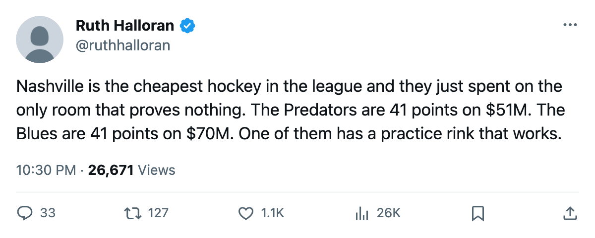
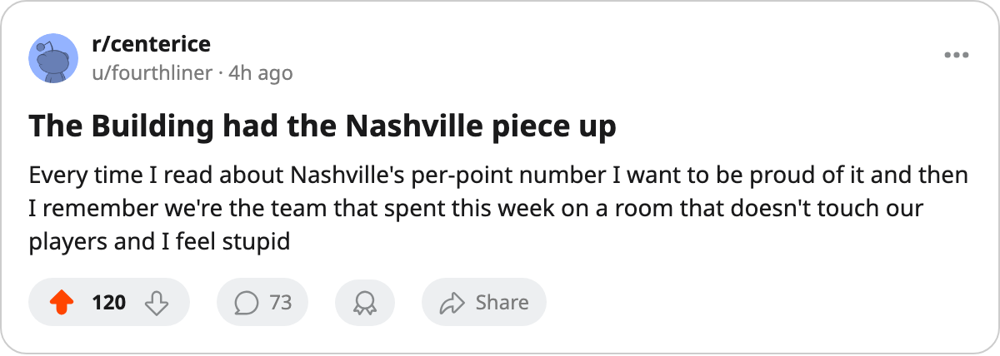

Nashville Pays $1.25M a Point and Spent This Fortnight on a Room That Moves Nothing
The Predators and St. Louis sit at 41 points on two different payrolls and two different buildings
 Ruth HalloranBusiness of hockey · The Building
Ruth HalloranBusiness of hockey · The Building
 Nashville Predators leads the Central Division with 41 points on a $51.08M payroll. That is $1.25M per point, the lowest figure in the league, ahead of Dallas at $1.32M and Edmonton at $1.34M.
Nashville Predators leads the Central Division with 41 points on a $51.08M payroll. That is $1.25M per point, the lowest figure in the league, ahead of Dallas at $1.32M and Edmonton at $1.34M.
 St. Louis Blues has 41 points too. The Blues carry a $69.76M payroll and pay $1.70M a point. Colin Skuin's club is the third-highest spender in the league and gets the same table position as a club spending $18.69M less. The difference is visible in two rooms: Nashville's practice rink sits at level 3 with a modifier of -1. St. Louis has not touched its practice track this season and sits at level 0 with a modifier of -6. On any night inside the Scottrade Center, that is 5 attribute points every St. Louis player pays at home that every Nashville player does not.
St. Louis Blues has 41 points too. The Blues carry a $69.76M payroll and pay $1.70M a point. Colin Skuin's club is the third-highest spender in the league and gets the same table position as a club spending $18.69M less. The difference is visible in two rooms: Nashville's practice rink sits at level 3 with a modifier of -1. St. Louis has not touched its practice track this season and sits at level 0 with a modifier of -6. On any night inside the Scottrade Center, that is 5 attribute points every St. Louis player pays at home that every Nashville player does not.
The third upgrade, and the dead one
Som Richards has filed 3 facility moves on record. Equipment went from 1 to 2 in April. Practice went from 2 to 3 in late May. This week, between 2005-12-11 and 2005-12-15, he raised the scouting room from 1 to 2.
The scouting room carries a number in the tuning file and nothing in this league reads it. It feeds only the trade valuation, a figure no outside source publishes. The two tracks that moved a rating this season, equipment and practice, together improved the live sum by 2 points. The third move changed a column that does nothing a reporter can see.
Nashville's live sum sits at -10, 3rd best in the league behind Toronto at -1 and New Jersey at -9. St. Louis sits at -16, tied with San Jose, Atlanta, Florida, Phoenix and Chicago for 22nd.
What the gate says back
Both clubs make money. Nashville earns $20.73M in profit on $46.58M of revenue, with 15,699 fans through the gate at $82 a seat. St. Louis earns $10.77M on $42.17M of revenue, with 15,135 at $80. Nashville's profit is nearly double on a payroll $18.69M lighter. The building is doing more work per dollar spent on tickets.
The league keeps a prestige standing for each general manager. Richards sits 5th at 1002. Skuin sits 26th at 575. Neither figure is a grade on a man's judgment, and the League Scouting Bureau publishes it without explaining how a club earns it.
The room that costs the most
Nashville's weakest money-moving track is the workout room at level 1, modifier -4. St. Louis has the same workout track at level 1, the same -4. Neither has raised it. The Predators' travel sits at 2 (-2) and the Blues' at 2 (-2). Those two tracks are identical.
What separates them on the ice is the practice rink. Nashville goes 11-1 at home, the best home record in the Central Division. The home-ice modifier of -1 is the smallest home penalty in the division. St. Louis goes 7-5 at home with a -6 that no other Central club carries.
The Predators went 8-9 on the road against a travel modifier of -2. The Blues went 12-4 away, carrying the same -2. St. Louis is 18-6-3 and gets 41 points mostly by winning on the road despite paying the same travel tax Nashville does. Nashville wins at home because the floor is closer to par under them.
The scouting room at level 2 will not change any of this. The league's own tuning file reads nothing from it. Richards spent a fortnight's budget on a number that no player feels and no reader can verify.

